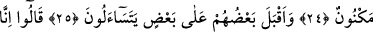
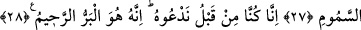

CENNETTEKİ İKRAMLAR
22. Onlara canlarının istediği meyve ve etten bol bol verdik.
23. Orada karşılıklı kadeh tokuştururlar, ama burada (içki yüzünden) ne
saçmalama vardır ne de günaha girme.
24. Hizmetlerine verilmiş, (kabuğunda) saklı inci gibi gençler etraflarında dönüp
dolaşırlar.
25. Cennettekiler birbirlerine dönüp sorarlar:
26. Derler ki: «Daha önce biz, aile çevremiz içinde bile (ilâhî azaptan)
korkardık.»
27. «Allah bize lütfetti de bizi vücudun içine işleyen azaptan korudu.»
28. «Gerçekten biz bundan önce O’na yalvarıyorduk. Çünkü iyilik eden,
esirgeyen ancak O’dur.»
“Med” kelimesinin asıl mânâsı “çekmek”tir. “İmdâd” kelimesi daha çok “arzu edilen”
şeylerde, “med” kelimesi ise “hoşlanılmayan” şeylerde kullanılır. “İmdâd”, yardım
etmek, imdâda koşmak anlamına gelir.
Kâmus’ta ise “imdâd” kelimesine ecelin te’hir edilmesi, bir topluluğun diğer bir
topluluğa yardıma gelmesi, yardım etmek ve yardım istemek gibi mânâlar verilmiştir.
Onlara “meyvadan” yâni meyvelerin tümü ile “canlarının istediği etten bol bol
vermişizdir.” Her ne kadar taleplerini açıkça ifâde etmeseler de.
Bu âyetin mânâsı şöyledir: Onların nimet yollarını diledikleri çeşit ve tarzlarda
peyderpey arzularına göre artırdık. Bunun da nedeni Allah Teâlâ’nın «Onların kendi
amellerin(in (sevapların)dan da hiçbir şey eksiltmemişizdir» (et-Tûr 52/21)
buyurmasıdır. “Bol bol vermişizdir” kavli ile hem atalarını hem de zürriyetlerini
kapsayan eşitlik ifâdesinin getirilmesi, bu hususta noksanlık ihtimalinin ortadan
kaldırıldığının bir tasdikidir. Yâni her iki tarafa da eşit olarak vermede bir
noksanlaştırma olmayacağı gibi, tam aksine amellerinin sevabını vermede ve onlara
cennet nimetlerini sunmada ziyâdelik olacaktır.
“Fâkihe” kelimesinin tenvinli getirilmesi, bunların son derece çok olacağını belirtmek